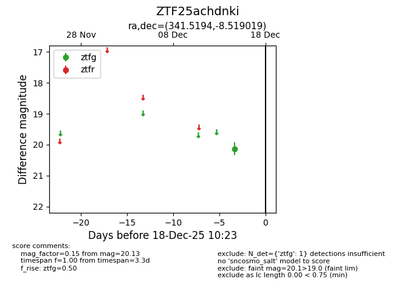
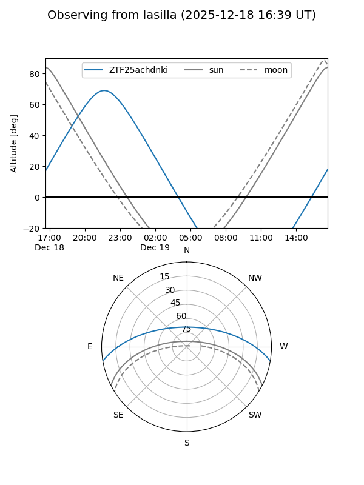
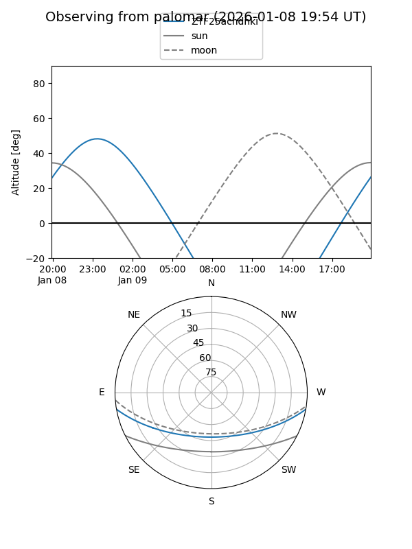

ZTF25achdnki
Target ZTF25achdnki at 2026-01-09 12:49
Aliases and brokers:
FINK: link
Lasair: link
ALeRCE: link
alt names
ZTF25achdnki (ztf,fink_ztf)
Coordinates:
equatorial (ra, dec) = 341.5194,-8.51902
equatorial (HMS+DMS) = 22:46:04.66,-08:31:08.47
galactic (l, b) = (59.1508,-55.01440)
Flags:
Photometry:
last ztfg=20.13
1 ztfg detections
Lightcurve

Visibility


Additional plots